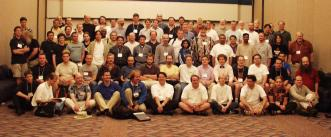

The 2004 Kernel Summit

Monday
Monday got off to a bit of a slow start; it seems that some of the developers may have enjoyed themselves a bit too much at the opening dinner the night before. Summit attendees also had a serious problem: ISP troubles keep the wireless network down all day, so there was little alternative to actually listening to the ongoing sessions. That said, a constructive set of discussions was held with little overt disagreement among the participants.Monday's sessions include:
- The processor panel. Engineers from
Intel, AMD, and IBM discussed where their architectures are going and
the implications for the Linux kernel.
- Virtual memory, with special attention
to the topics of NUMA support, hotpluggable memory, and page
clustering.
- Software suspend; what will it take
before we can reliably suspend and restore our systems?
- Kobjects and sysfs, and what needs to
be done to get the developers to complain about them less in 2.7.
- Video drivers, featuring a cameo
appearance by Keith Packard.
- Desktop performance. Robert Love led a
discussion on how the Linux kernel can better support desktop
applications.
- Short topics, being an opportunity for developers to present an interesting issue in five minutes.
Tuesday
Tuesday's coverage is now complete. This long day was set aside for a wide range of topics, from customer experiences to clustering, to the development process. The individual sessions were:
- The customer panel was a discussion led
by technical managers from Goldman Sachs and Amazon.com; they talked
about the problems they have with Linux and how the kernel could
better support their needs.
- Clustered storage and just what
capabilities need to go into the kernel to support this feature.
- Kexec and fast booting; what is
required to make the Linux kernel boot in a reasonable period of time?
- RAS tools, with an emphasis on simple
tools to help track down kernel reliability problems.
- Networking summit summary. One week
prior to the kernel summit, a small group got together in Oregon for a
two-day networking summit. Stephen
Hemminger summarized the results for the kernel group.
- Asynchronous I/O; a session on what
is required to make AIO work properly under Linux, and whether it is
worth doing.
- Multipath I/O and device mapper issues.
- Virtualization, running virtual
machines under (and on top of) Linux.
- Security. Linux has acquired a great
many security features over the last few years; what other work is
required in that area?
- Class-based Kernel Resource
Management.
- OSDL relations. How does the Open
Source Development Labs relate with the development community, and
how can that relationship be improved?
- The final session was about the development process; have a look to see what was said about when the 2.7 development series will begin - the answer is not quite what one would expect.
| Index entries for this article | |
|---|---|
| Kernel | Kernel Summit |
| Conference | Kernel Summit/2004 |